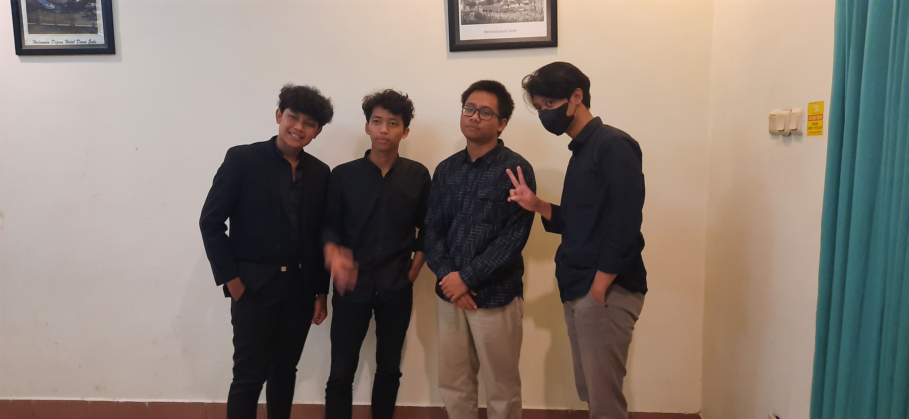
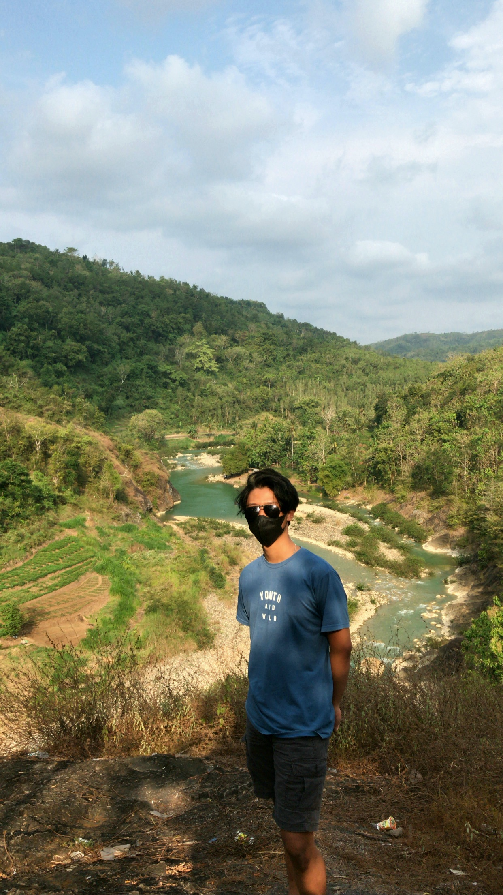
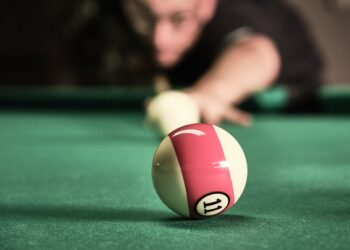

Home

hallo nama saya Muhammad Dzawkan Ar Rosyid
, Saya berasal dari Universitas AMIKOM Yogyakarta . Saya juga sedang menempuh semester 5,din Universitas AMIKOM Yogyakarta saya mengambil jurusan Informatika.Saya merupakan anak pertama dari 3 bersaudara. Salam kenal semuanya,semoga saya lancar mengikuti kelas Dicoding ini
About

Dirumah saya juga banyak mengikuti organisasi,seperti :
- karang taruna
- remaja masjid
- Kampung Ramah anak
- IRM(Ikatan Remaja Muhammadiyah
Selain mengikuti Organisasi saya juga sering membantu orang tua dalam mengerjakan pekerjaan rumah. Ayah saya bekerja sebagai sales,dan ibu saya bekerja sebagai ibu rumah tangga. Pada organisasi karang taruna saya aktif sebagai anggota, pada organisasi remaja masjid saya juga berperan sebagai ketua remaja masjid. Dalam organisasi Kampung ramah anak saya juga aktif sebagai sie-dokumentasi
Hobby
Saya juga memiliki beberapa hoby,antara Lain:
Bermain Bola

saya senang bermain bola,dengan bermain bola, tubuh terasa segar. Selain dapat membuat tubuh segar,bermain bola juga dapat meningkatkan metabolisme tubuh,dengan bermain bola otak pun juga ikut sehat
Bermain Biliard

saya juga suka bermain biliard,dengan bermain biliard pikiran menjadi tennang
Menyanyi
dengan menyanyi itu merupakan cara saya dalam meluapkan emosi dan lelah